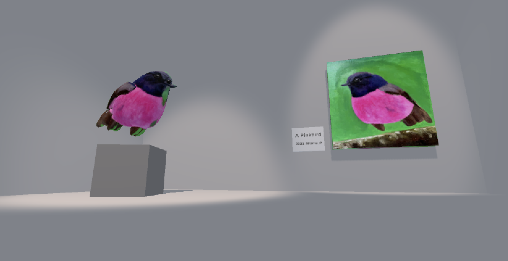
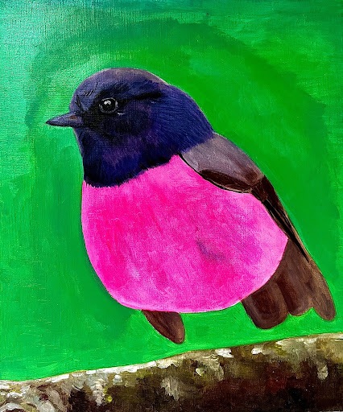
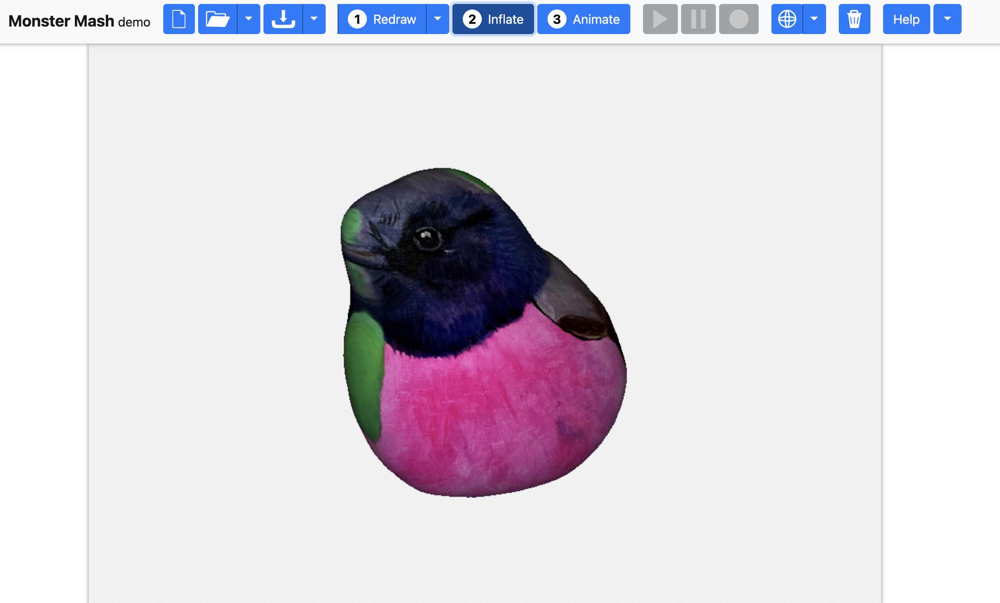

<!DOCTYPE html>

<html lang="en">
    
    <head>

        <meta charset="utf-8" name="viewport" content="width=device-width, initial-scale=1.0">
        <link rel="stylesheet" type="text/css" href="../style.css">
        <script type="module" src="../three.js" defer></script>

    

        <title>MINNIE PARK</title>

         <!-- Favicon -->
         <link rel="apple-touch-icon" sizes="180x180" href="../favicon/apple-touch-icon.png">
         <link rel="icon" type="image/png" sizes="32x32" href="../favicon/favicon-32x32.png">
         <link rel="icon" type="image/png" sizes="16x16" href="../favicon/favicon-16x16.png">
         <link rel="manifest" href="../favicon/site.webmanifest">
         
        <style>
            body {
                background-color: rgb(81, 84, 87);
                background-image: linear-gradient(to right, rgba(255, 255, 255, 0), rgb(70, 60, 70));
                background-image: cover;
                
            }
        </style>

    </head>

    <body>

        <header>
            <div id="header-section">
                <nav>
                    <ul>
                        <li><a href="../index.html"></a></li>
                    </ul>
                </nav>
                
                <audio id="bgm" src="../audio/birds.mp3" autoplay loop ></audio>
                <script>
                    var bgm = document.getElementById("bgm");
                    bgm.volume = 0.2;
                    var musicPlay = document.getElementById("musicPlay");
                    musicPlay.onclick = function(){
                        if(bgm.paused){
                            bgm.play();
                            musicPlay.src="../img/musicnote.png";
                        } else {
                            bgm.pause();
                            musicPlay.src="../img/pause.png";
                        }
                    }
                </script>
            </div>
        </header>
<!-- 
<h1 id="top"></h1><br><br><br> -->

<!-- <div class ="text-wrapper">
    <h2>THE UGLY BLUE BUTTON TO PLAY THE GAME</h2>
    <h2>THE UGLY BLUE BUTTON TO PLAY THE GAME</h2>
    <h2>THE UGLY BLUE BUTTON TO PLAY THE GAME</h2>
    <h2>THE UGLY BLUE BUTTON TO PLAY THE GAME</h2>
</div> <br>

<div id="embed">
<iframe id='webgl_iframe' frameborder="0" allow="autoplay; fullscreen; vr" allowfullscreen="" allowvr=""
    mozallowfullscreen="true" src="https://play.unity.com/webgl/d2e7042a-0732-464a-b2f8-ba1ac854a235?screenshot=false&embedType=embed"  
    width="810" height="440" onmousewheel="" webkitallowfullscreen="true"></iframe></div>

    <br><br><br><br><br><br><br>

<div class="contentBox" >
        <h3>WHAT IS IT?</h3><br>
    
        <br><br>
        <p2>THE PINK BIRD</p2>
        <p>
        A small gallery with a painting of a pink bird and a statue of it with two spotlights on them. 
        Players can either turn on and off the light with a switch by pressing the keyboard, “L.”
        <br><br>
        Once the player approaches the gallery from the long hallway, the instruction on how to turn on the light is given. It’s the player’s choice to either turn the light on or off. The player can either focus more on the arts with lights on or choose to have time alone to meditate and look back into one’s heart in a darker atmosphere.
        </p><br><br></div>
    
      

<div class="contentBox" >
    <h3>DESIGN APPROACH</h3><br> -->
<!-- 
    <br><br> -->

   <!--  <p2>Concept Design: Wabi-sabi</p2>
      <p>
        Wabi-Sabi is a traditional Japanese philosophical term to accept the imperfection, 
        emptiness, incompleteness, and impermanence of all things because 
        <br><br><p3>
            “nothing lasts, nothing is finished, and nothing is perfect." 
            <br>("Wabi-sabi - Wikipedia", 2022)
            </p3><br><br>
        The term is applied throughout all fields of the world: architecture, art, design, technology, psychology, and etc. 
        </p><br>
       
      <p>
        Wabi-sabi I wanted to examine more in this work is about when it is applied in the philosophy of how people look at themselves. People assume that they understand how valuable they are just as they are, however, they often fall into frustration after finding out the ugly parts of themselves.
        Wabi-sabi truly reminded me that it is okay to be myself, who is far from perfection, and to embrace the imperfections as they are also the parts of myself.
        </p><br>
    
    <p2>My Wabi-sabi</p2><br>
    <p>
        This is the painting I drew at home back in 2020 during Covid-19 lockdown. It’s clearly unfinished since it’s missing legs and feet.
    </p><br>
    <br><br>
 
    <p>
        Going through lockdown was definitely challenging for me and I felt frustrated, troubled, helpless and lost. So I was reflecting my feelings into the painting. I painted a bird which is like a symbol of freedom, as birds fly to wherever and whenever they would like to travel. But this bird has no legs to sit down or to travel and its wings are not ready to fly as well. They look like they’re too weak to handle the weight. So now, everytime when I look at this painting, I remember how I felt so troubled and lost during that time. But I realised through examining wabi-sabi that it’s okay to feel imperfect and troubled.
    </p><br>
    <p>
        And the pink bird game offers the opportunity to reflect and meditate about the imperfections and incompleteness of ourselves by observing the pink bird with no legs. I hope the players can also think about their own “pink bird” moments to remind themselves of how it’s okay to feel imperfect and lost sometimes. 
    </p><Br>

    <p2>Technical Design: 3D model and the light switch</p2>
    <br><br><br><br>
    <p>
        This is a website I found from researching how to create 3d models from 2d images, it’s called “Monster mash.” It was challenging to get the clean shape and details, but it is Wabi-sabi, right?
        <p><br>
        The script is written so when the player approaches the zone or the collider of the button, the text appears and the button is animated to turn on the light, it also has the switching sound embedded.
        <br><br>

    <p2>Aesthetics, Colour Palette and Sound Design</p2>
    <p>
        The painting has a vivid colour combination of pink and green which now became my all time favourite combination, not that I am new to using these colours(apparently, I’ve been using this colour combination a lot from a few years ago without realising). To focus the attention on the birds, no other colours are used in the game. 
    <br><br>
    To create a calm and relaxing atmosphere, I’ve added forest birds ambience sound effects as background audio. The audio listener is added to the player or the game controller so as it approaches the gallery, the player can listen to the sound. 
    </p><br><br>
  </div>

<div class="contentBox" >
    <h3>REFLECTION</h3><br>
<p>
    After Liam’s comment on how this game is also speaking about the digital wabi-sabi, I really liked that as well. Not only the painting, or myself are the wabi-sabi, but the 3d models as well! I think I definitely learned to be more accepting with these minor imperfections. I tend to try hard to be near to perfect but sometimes I get frustrated when things are not going as hoped. I think I learned to be more accepting of myself as well that it’s okay to make mistakes sometimes. 
<br><br>
This is the first game I created among others. Through examining wabi-sabi, I really got to think deeply about myself, especially how struggling I was for the last few years with Covid and other things going on with my life. To be honest, I was struggling a lot mentally and I was exhausted and depressed. I needed to look back to myself and find things that would help me recover. This game was an opportunity for me to deeply look inside myself and it really helped. I think I needed to accept that I was struggling and acknowledge that it’s okay to struggle sometimes. I’m grateful for the fact that I was able to find a little peace with myself through this deep dive of self-reflection. 
</p><br><br>
</div><br>

<div class="bottomPage">
    <ul><li><a href="#top"></a></li></ul>
    <ul><li><a href="../index.html"></a></li></ul>
    <ul><li><a href="contact.html"></a></li></ul>
</div><br> -->

</body>

</html>

